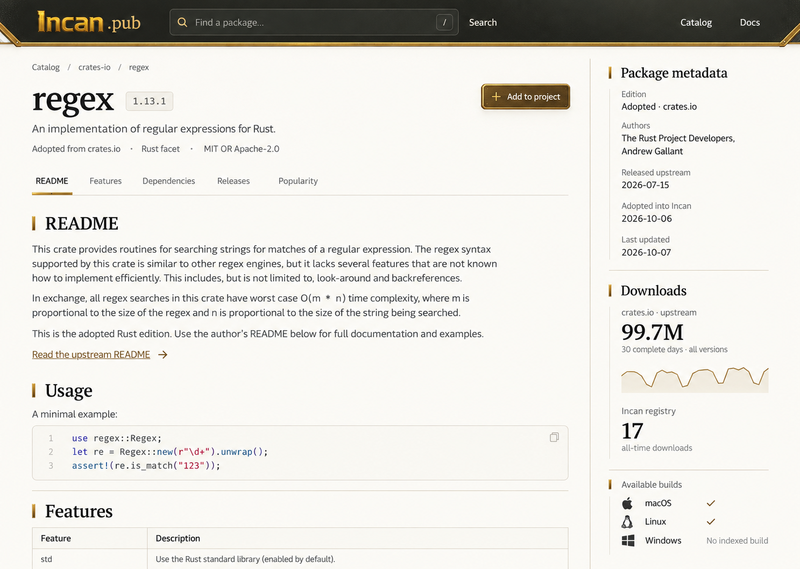
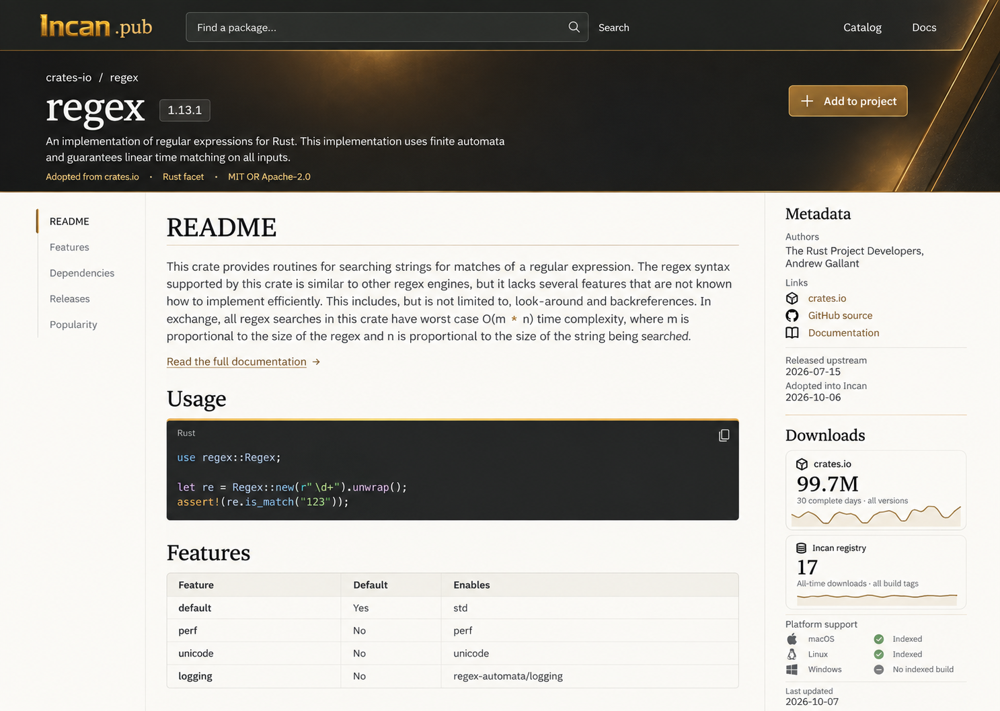
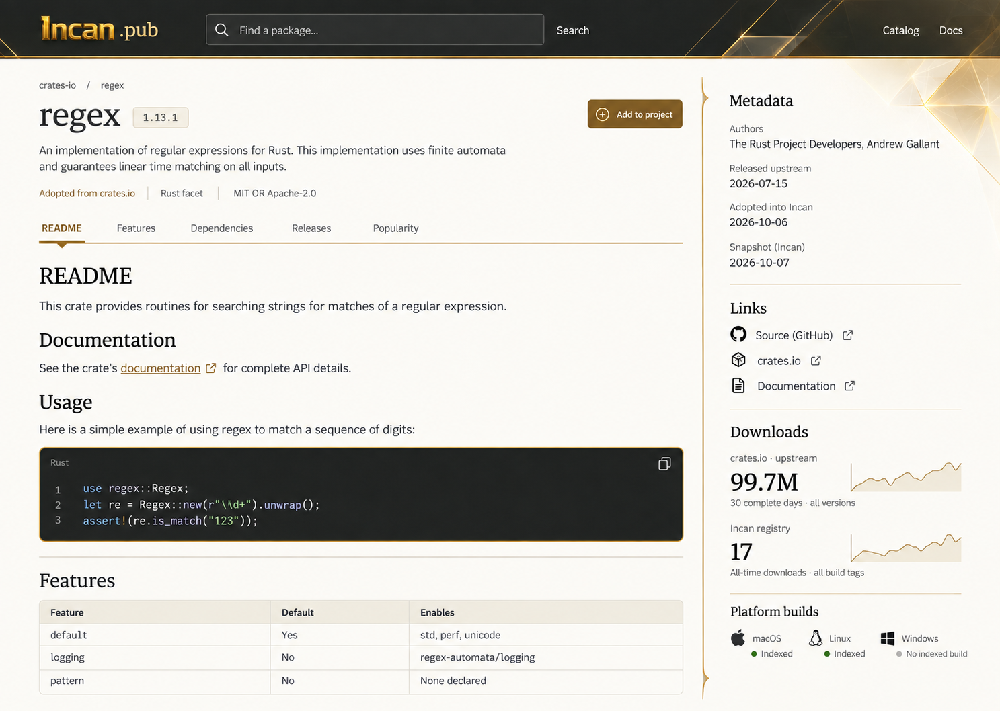

Incan.pub visual directions
Three static concepts, in the same order as the chat. Tap a mockup to open its original image, then zoom in.
These explore appearance. The implemented page will use the recorded package data; animations are not represented here.
Option 1
Open full-size image
Option 2
Open full-size image
Option 3
Open full-size image